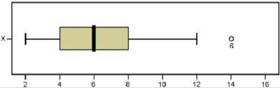

The following questions are intended to help you judge your preparation for this exam. Carefully work through the problems.
These questions are repeated on the preparation quiz for this lesson.
This is not designed to be a comprehensive review. There may be items on the exam that are not covered in this review. Similarly, there may be items in this review that are not tested on this exam. You are strongly encouraged to review the readings, homework exercises, and other activities from Unit 1 as you prepare for the exam.
Lesson Outcomes
Show/Hide Lesson Outcomes
The expectation on the exam is that you should be able to do the following:
- Distinguish between a categorical and a quantitative variable.
- Distinguish between an observational study and an experiment.
- Distinguish between a population and a sample.
- Distinguish between a parameter and a statistic.
- Distinguish and give an example of each of the following sampling schemes:
- Simple random sampling
- Systematic sampling
- Cluster sampling
- Stratified sampling
- Convenience sampling
- Explain the significance of using a random sample.
- Determine the shape of a distribution using a histogram and/or box plot.
- Determine the centers of a given histogram and/or box plot.
- Identify the mean, median and standard deviation in skewed or normal histograms.
- Calculate the mean, median and standard deviation from quantitative data.
- Calculate a percentile from a quantitative data set.
- Calculate a five-number summary from quantitative data with Excel, or by hand.
- Create a histogram and a box-plot from quantitative data.
- State and apply the three axioms of probability.
- State the properties of a normal density curve.
- Calculate the z-score of an individual observation, given the mean and standard deviation.
- Interpret a z-score.
- Calculate probability as area under a normal density curve.
- Assess normality using a QQ-plot.
- Explain how a sampling distribution is created.
- Determine the mean, standard deviation and shape of a distribution of sample means.
- State and apply the Central Limit Theorem and the Law of Large numbers.
- Calculate probabilities using a distribution of sample means.
Lesson Summaries
Show/Hide Unit 1 Summaries
Lesson 01 Recap
Each lesson follows the same schedule: Individual and Group Preparation, Class Meeting, and Homework Assignment and Quiz. Understanding this layout will help you successfully manage the workload of this class.
In this class you will use the online textbook that has been written for you by your statistics teachers. All of the assignments and quizzes will be based on the readings, so study it well.
- By doing the work, staying on schedule, and living the Honor Code you can succeed in this class!
Lesson 02 Recap
The Statistical Process has five steps: Design the study, Collect the data, Describe the data, Make inferences, Take action.
In a designed experiment, researchers control the conditions of the study. In an observational study, researchers don’t control the conditions but only observe what happens.
- There are many sampling methods used to obtain a sample from a population:
- A simple random sample (SRS) is a random selection taken from a population
- A systematic sample is every kth item in the population, beginning at a random starting point
- A cluster sample is all items in one or more randomly selected clusters, or blocks
- A stratified sample divides data into similar groups and an SRS is taken from each group
A convenience sample is one easily obtained in a less-than-systematic way and should be avoided whenever possible
Quantitative variables represent things that are numeric in nature, such as the value of a car or the number of students in a classroom. Categorical variables represent nonnumerical data that can only be considered as labels, such as colors or brands of shoes.
- The null hypothesis (\(H_0\)) is the foundational assumption about a population and represents the status quo. The alternative hypothesis (\(H_a\)) is a different assumption about a population. Using a hypothesis test, we determine whether it is more likely that the null hypothesis or the alternative hypothesis is true.
Lesson 03 Recap
A histogram allows us to visually interpret data. Histograms can be left-skewed, right-skewed, or symmetrical and bell-shaped.
The mean, median, and mode are measures of the center of a distribution. The mean is the most common measure of center, and is computed by adding up the observed data and dividing by the number of observations in the data set.
The standard deviation is a number that describes how spread out the data are. A larger standard deviation means the data are more spread out than data with a smaller standard deviation.
A parameter is a true (but usually unknown) number that describes a population. A statistic is an estimate of a parameter obtained from a sample.
- Quartiles/percentiles, Five-Number Summaries, and Boxplots are tools that help us understand data. The five-number summary of a data set contains the minimum value, the first quartile, the median, the third quartile, and the maximum value. A boxplot is a graphical representation of the five-number summary.
Lesson 04 Recap
- The three rules of probability are:
A probability is a number between 0 and 1. \[0 ≤ P(X) ≤ 1\]
If you list all the outcomes of a probability experiment (such as rolling a die) the probability that one of these outcomes will occur is 1. In other words, the sum of the probabilities in any probability is 1. \[\sum P(X) = 1\]
- The probability that an outcome will not occur is 1 minus the probability that it will occur. \[P(\text{not}~X) = 1 - P(X)\]
Lesson 05 Recap
A normal density curve is symmetric and bell-shaped. The curve lies above the horizontal axis and the total area under the curve is equal to 1.
A standard normal distribution has a mean of 0 and a standard deviation of 1. The 68-95-99.7% rule states that when data are normally distributed, approximately 68% of the data lie within 1 standard deviation from the mean, approximately 95% of the data lie within 2 standard deviations from the mean, and approximately 99.7% of the data lie within 3 standard deviations from the mean.
A z-score tells us how many standard deviations away from the mean a given value is. It is calculated as: \(\displaystyle{z = \frac{\text{value}-\text{mean}}{\text{standard deviation}} = \frac{x-\mu}{\sigma}}\)
The probability applet allows us to use z-scores to calculate proportions, probabilities, and percentiles.
- A Q-Q plot is used to assess whether or not a set of data is normally distributed.
Lesson 06 Recap
The distribution of sample means is a distribution of all possible sample means (\(\bar x\)) for a particular sample size. It has a mean of \(\mu\) and a standard deviation of \(\sigma/\sqrt{n}\).
The distribution of sample means is normal when \(\bar x\) is normally distributed or when, thanks to the Central Limit Theorom (CLT), our sample size (\(n\)) is large.
- The Law of Large Numbers states that as the sample size (\(n\)) gets larger, the sample mean (\(\bar x\)) will get closer to the population mean (\(\mu\)).
Lesson 07 Recap
When the distribution of sample means is normally distributed, we can use z-scores and the probability applet to calculate proportions and probabilities. A z-score is calculated as: \(\displaystyle{z = \frac{\text{value}-\text{mean}}{\text{standard deviation}} = \frac{\bar x-\mu}{\sigma/\sqrt{n}}}\)
- The \(P\)-value is the probability of getting a test statistic at least as extreme as the one you got, assuming \(H_0\) is true. A \(P\)-value is calculated by finding the area under the normal distribution curve that is more extreme (farther away from the mean) than the z-score.
Review Questions
What is the name of the important statistical result that guarantees that the sampling distribution of the sample mean \(\bar x\) will be normal, if the sample size is large?
What is the name of the important statistical result that states that when the sample size is large, the sample mean \(\bar x\) will be close to the population mean \(\mu\)?
Which of the following variables is/are categorical?
The number of animals in the local zoo
A randomly selected brand of toothpaste at a convenience store
Age in years of a randomly selected vehicle in a parking lot
The mean I.Q. test score in the United States is 100. Twenty randomly selected Statistics students took an I.Q. test, and the mean of their scores was 112. Which of these two numbers is a parameter and which is a statistic?
Rotham City has four distinct neighborhoods. The property values are very similar within each neighborhood, but they vary considerably from neighborhood to neighborhood. One neighborhood has very low property values and another has extremely high property values. Property taxes are usually roughly proportional to the property values. What type of sample should we collect to gauge the residents’ responses to a proposed increase in property taxes?
When designed experiments are conducted in public school systems, researchers typically choose a particular district, and randomly select teachers of, say, fourth grade students in that district. The experiment is then conducted using all the students in the selected classes. Which type of sampling scheme is implemented?
At a school fund raiser, the name of every person who attended was entered into a drawing. At the end of the evening, six names were selected to receive door prizes. Which type of sampling scheme was implemented?
A special interest group is conducting a survey regarding wolves in Yellowstone National Park. To adequately gauge opinions on both sides of the political spectrum, the researchers took the list of registered Democrats and selected a simple random sample of 100 people. Then, they took a list of registered Republicans and selected a simple random sample of 100 people. Which type of sampling scheme was implemented?
A survey was taken of purchases at the Crossroads. Open the data file CrossroadsPurchases.xlsx and use this data to answer questions 9 and 10.
Calculate the descriptive statistics of the amounts spent in Crossroads purchases. Give the mean, standard deviation, and five-number summary of the data.
Create a histogram representing the amounts spent in Crossroads purchases.
Jessica Meir and her research team measured the body temperatures of a sample of diving elephant seals. A thermistor was placed at a specific location on each seal to measure its body temperature. The body temperature of seals tends to decrease as they dive. The researchers estimated the typical body temperature of each seal at the time they initiate a dive and called this the “representative temperature” of the seal.
Thermistors were placed in the hepatic sinus of four of the seals (named Bodil, Roberta, Larry, and Per.) The seal’s body temperature at the start of the dive was calculated to be:
|
Bodil
|
37.91
|
|
Roberta
|
37.25
|
|
Larry
|
38.98
|
|
Per
|
38.16
|
|
|
|
Complete the following table and answer questions 11 through 14 below.
|
Seal
|
\(x\)
|
\((x-\bar x)\)
|
\((x-\bar x)^2\)
|
|
Bodil
|
37.91
|
“A”
|
|
|
Roberta
|
37.25
|
|
“B”
|
|
Larry
|
38.98
|
|
|
|
Per
|
38.16
|
|
|
|
|
|
|
|
What is the value of the number that goes in the position marked with an “A” in the table above?
What is the value of the number that goes in the position marked with an “B” in the table above?
What quantity is equal to the sum of the numbers in the “Squared Deviations” column?
A. The mean B. The standard deviation C. The variance D. None of these is correct
What is the standard deviation of these temperatures?
(True or False) Under certain conditions, the standard deviation can be negative.
In the same study, the researchers placed thermistors (temperature sensors) in the three seals (named Chick, Starburst, and Patty) near their spinal cord and brain in the extradural vein. They placed thermistors in six other seals (named Sir Richard, Jerry, Sammy, Knut, Jonesie, and Butler) in their aorta, the largest artery in the body. Finally, they placed thermistors in four other seals (named Bodil, Roberta, Larry, and Per) in their hepatic sinus. The results from this study are summarized in the table below.
|
Location
|
\(n\)
|
\(\bar x\)
|
\(s\)
|
|
Arterial
|
6
|
38.785
|
1.554
|
|
Extradural
|
3
|
37.247
|
0.577
|
|
Hepatic Sinus
|
4
|
38.070
|
0.715
|
|
|
|
|
|
Which location resulted in the most consistent temperature measurements from one seal to another? Justify your answer.
- In your own words, and without using any mathematical symbols or statistical jargon, explain what the standard deviation is. Do not tell how to calculate the standard deviation, but explain what it represents.
- The number of hours students spent studying for an exam were recorded. The data are represented by the boxplot below. Use this boxplot to answer questions 18 and 19.

Give the five-number summary of this data.
What percentage of the data lies between 4 hours and 8 hours?
- An observation from a normally distributed population is considered “unusual” if it is more than 2 standard deviations away from the mean. There are several contaminants that can harm a city’s water supply. Nitrate concentrations above 10 ppm (parts per million) are considered a health risk for infants less than six month of age. The City of Rexburg reports that the nitrate concentration in the city’s drinking water supply is between 1.59 and 2.52 ppm (parts per million,) and values outside of this range are unusual. We will assume 1.59 ppm is the value of \(\mu-2\sigma\) and \(\mu+2\sigma\) is equal to 2.52 ppm. It is reasonable to assume the measured nitrate concentration is normally distributed. Use this information to answer questions 20 through 22.
Estimate the mean of the measured nitrate concentration in Rexburg’s drinking water.
Estimate the standard deviation of the measured nitrate concentration in Rexburg’s drinking water.
Between what two measured nitrate concentrations do approximately 68% of the data values lie?
What is the mean and standard deviation of the standard normal distribution?
- The admissions committees for most masters of business administration (MBA) programs require the Graduate Management Admission Test (GMAT) as part of the application for new students. It has been shown that the scores on the GMAT are normally distributed with a mean of 542.3 and a standard deviation of 120.54. The minimum GMAT score required for admission to the MAcc program in the School of Accountancy at BYU is 500, but it is rare for students with scores less than 600 to be admitted. Use this information to answer questions 24 through 32.
What is the probability that a randomly selected student will score above 542.3 on the GMAT?
What is the probability that a randomly selected student will score below 600 on the GMAT?
What is the probability that a randomly selected student will score 600 or above on the GMAT?
Find the GMAT score that corresponds to the 10th percentile.
Find the GMAT score that corresponds to the 90th percentile.
Find the first quartile of the distribution of GMAT scores.
Find the third quartile of the distribution of GMAT scores.
Consider a simple random sample of \(n=15\) students taking the GMAT.
What are the mean and standard deviation of the distribution of sample mean scores for all such samples?
What is the probability that the sample mean GMAT score for a SRS of \(n=15\) students will be greater than 600?
Copyright © 2017 Brigham Young University-Idaho. All rights reserved.